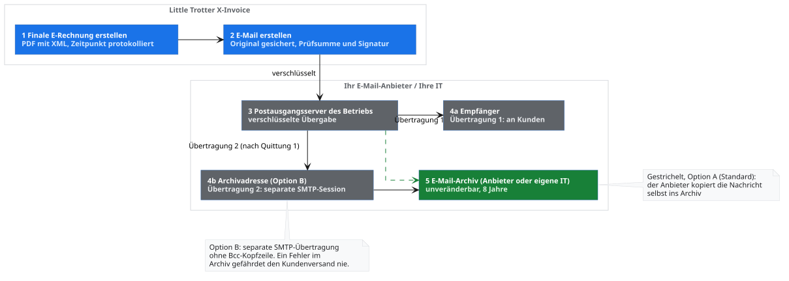
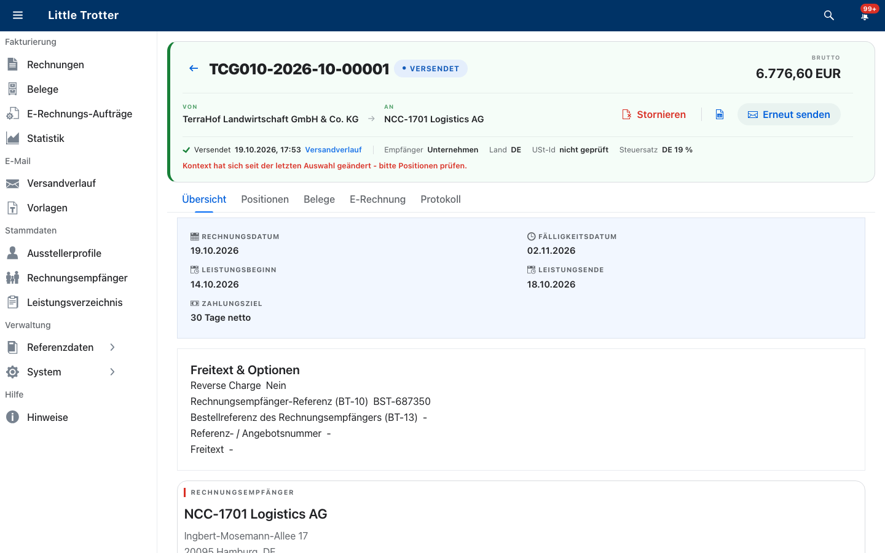
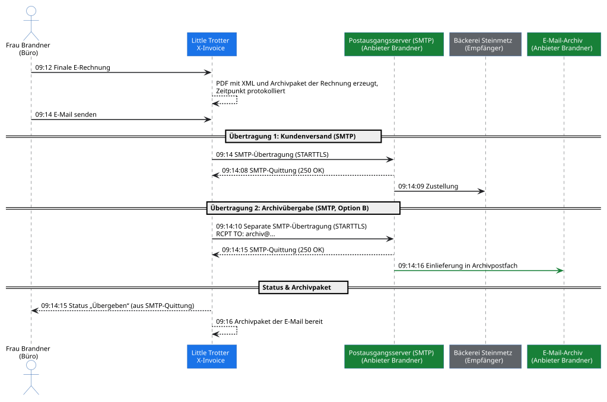
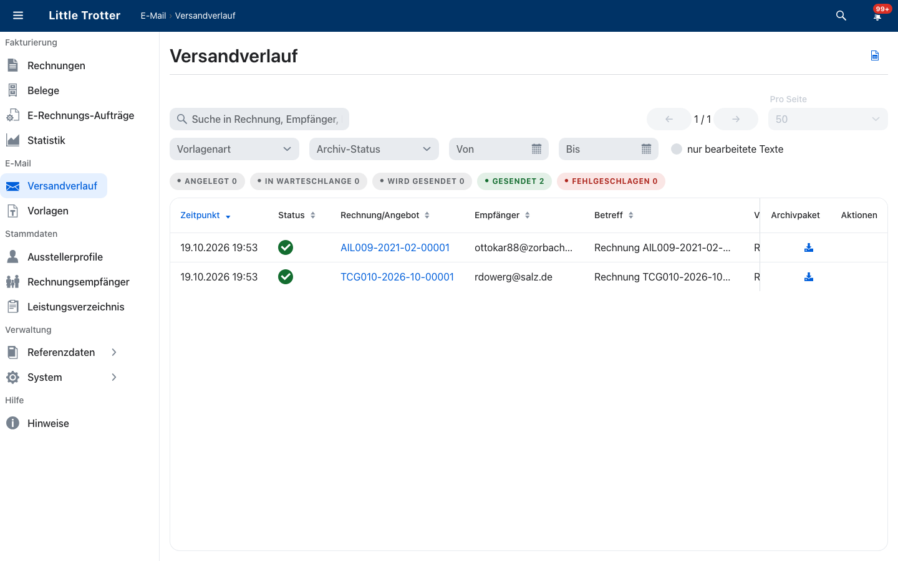
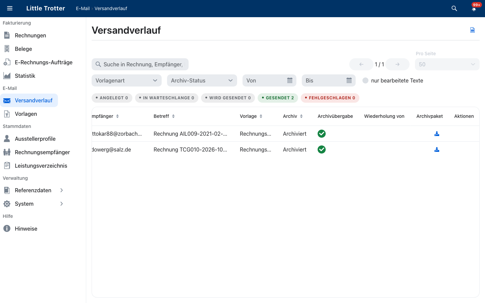
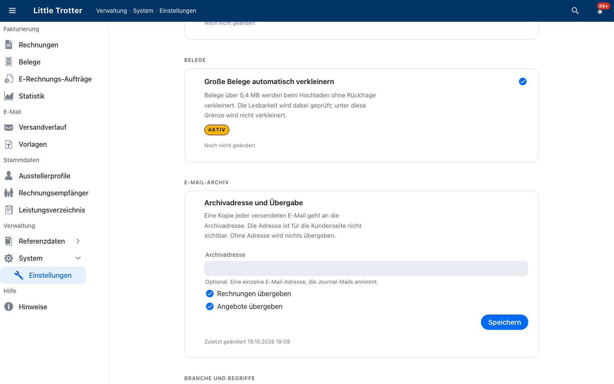

Dieser Leitfaden erklärt, wie jede Rechnung, die Little Trotter X-Invoice per E-Mail versendet, als Kopie in das E-Mail-Archiv Ihres Betriebs gelangt und was Little Trotter dazu nachweist. Er zeigt den Weg Schritt für Schritt, beschreibt die Einrichtung und erklärt, woran Sie den Erfolg erkennen. Das Archiv selbst stellt Ihr E-Mail-Dienstleister; Little Trotter übergibt und protokolliert.
|
Hinweis
|
Hinweise zu Transparenz, Einordnung und Verantwortung
|
1. Auf einen Blick
Little Trotter erstellt die E-Rechnung, versendet sie per E-Mail und protokolliert den Versand. Die unveränderbare Aufbewahrung über acht Jahre übernimmt das E-Mail-Archiv Ihres Betriebs. Den einmaligen Aufwand haben Sie dort: Das Archiv muss gebucht und eingeschaltet sein. In Little Trotter ist wenig oder nichts einzurichten.
Ihr E-Mail-Dienstleister ist, wer Ihre E-Mail betreibt: Ihr Internetanbieter, Ihr IT-Fachbetrieb oder Ihre eigene IT-Abteilung. Dieser Leitfaden verwendet den Begriff für alle drei.
-
0 Klicks zusätzlich im Büro je Versand
-
1 Kopie je E-Mail im Archiv, für die empfangende Stelle unsichtbar
-
8 Jahre Aufbewahrung, eingestellt im Archiv
Aufbewahrt wird die E-Rechnung selbst. Sie liegt als Anhang der E-Mail im Archiv: das PDF mit eingebetteter XML-Datei und dieselbe XML-Datei noch einmal einzeln. Zusätzlich erzeugt Little Trotter zwei signierte Archivpakete, eines für die Rechnung und eines für die E-Mail. Mit ihnen lässt sich später zeigen, dass Rechnung und E-Mail seit ihrer Entstehung nicht verändert wurden.
Was das für das Büro bedeutet:
-
Keine Handarbeit: Niemand muss Rechnungen von Hand ablegen oder eine Adresse in Cc oder Bcc setzen. Die Kopie ins Archiv entsteht bei jedem Versand automatisch.
-
Gleicher Inhalt: Die Kopie im Archiv hat denselben Text und dieselben Anhänge wie die E-Mail an den Empfänger. Die Mailserver ergänzen unterwegs nur technische Kopfzeilen.
-
Sichtbarer Status: Im Versandverlauf steht zu jeder E-Mail, ob die Kopie im Archiv angekommen ist.
-
Kein gegenseitiges Blockieren: Ist das Archiv gerade nicht erreichbar, geht die Rechnung trotzdem an den Empfänger. Little Trotter versucht die Archivkopie später erneut und meldet einen endgültigen Fehlschlag im Nachrichtenzentrum.
|
Wichtig
|
Drei Fragen an Ihren E-Mail-Dienstleister
Lautet eine Antwort „nein“ oder „weiß nicht“, haben Sie vermutlich noch kein Archiv. Viele Standardtarife für E-Mail enthalten keines; es ist meist ein Zusatzprodukt. Prüfen Sie das Ergebnis mit einem Testversand: Schicken Sie eine Rechnung an eine eigene Adresse und lassen Sie die Nachricht im Archiv suchen. |
1.1. Geltungsbereich
Der Leitfaden gilt für Rechnungen, die Little Trotter per E-Mail versendet.
-
Frist: Rechnungen sind acht Jahre aufzubewahren. Die Frist beginnt am Ende des Jahres, in dem die Rechnung ausgestellt wurde. Sie kann sich verlängern, solange das Finanzamt die Steuer für diesen Zeitraum noch festsetzen darf, zum Beispiel während einer laufenden Betriebsprüfung. Lassen Sie das Archiv deshalb nicht automatisch am ersten möglichen Tag löschen, sondern klären Sie das Löschen mit Ihrer Steuerberatung.
-
Andere Versandwege: Rechnungen, die Sie auf anderem Weg übermitteln, zum Beispiel über ein Portal oder auf Papier, legen Sie selbst im Archiv ab.
-
Angebote: Little Trotter übergibt versendete Angebote technisch auf dem gleichen Weg. Für Angebote gelten aber andere Aufbewahrungsregeln als für Rechnungen; ein angenommenes Angebot ist in der Regel als Geschäftsbrief aufzubewahren. Die Einzelheiten beschreibt das Praxishandbuch; die Frist klären Sie mit Ihrer Steuerberatung.
2. Ablauf der Archivübergabe
Das Diagramm zeigt den Weg von der finalen E-Rechnung bis ins Archiv. Der Postausgangsserver ist der Server Ihres E-Mail-Dienstleisters, der die E-Mails Ihres Betriebs ins Internet verschickt.

Das fiktive Beispiel: Der Malerbetrieb Brandner versendet die Rechnung „RE-2026-0471“. Die Archivadresse ist archiv@brandner-maler.example.
2.1. Stationen
Die Nummern entsprechen den Kästen im Diagramm.
1 Finale E-Rechnung. Die zuständige Person im Büro stellt die Rechnung RE-2026-0471 fertig. Little Trotter erzeugt ein PDF/A-3 (ein PDF für die Langzeitaufbewahrung) mit eingebetteter XML-Datei und prüft beides. Ab jetzt lässt sich die Rechnung in Little Trotter nicht mehr ändern; Fehler korrigieren Sie mit einer Storno- oder Korrekturrechnung. Spur: der protokollierte Zeitpunkt der Fertigstellung.
2 E-Mail erstellen. Little Trotter baut die E-Mail aus Text, PDF und XML und speichert das Original. So lässt sich später zeigen, was genau verschickt wurde. Spur: Prüfsummen (digitale Fingerabdrücke) und eine digitale Signatur.
3 Postausgangsserver. Little Trotter übergibt die E-Mail über eine verschlüsselte Verbindung an den Postausgangsserver Ihres E-Mail-Dienstleisters. Der Server bestätigt die Annahme. Spur: Antwort des Servers mit Uhrzeit.
4a Zustellung an den Empfänger. Der Postausgangsserver stellt die E-Mail dem Rechnungsempfänger zu. Für ihn ist es eine gewöhnliche E-Mail mit PDF und XML.
4b Kopie an die Archivadresse (nur Option B). Hat der Postausgangsserver die E-Mail an den Empfänger angenommen (Station 3), schickt Little Trotter dieselbe E-Mail in einer zweiten, eigenen Übertragung an die Archivadresse. Scheitert diese zweite Übertragung, ist die erste davon nicht betroffen; Little Trotter wiederholt nur die Archivkopie.
5 Archiv. Bei Option B nimmt der Mailserver des Archivs die Kopie an, und im Versandverlauf erscheint der Status „Übergeben“. Bei Option A legt der E-Mail-Dienstleister die E-Mail schon beim Versand selbst im Archiv ab (gestrichelte Linie); Little Trotter sieht davon nichts.
|
Wichtig
|
Was die Bestätigung des Servers belegt und was nicht. Little Trotter erhält nur die Bestätigung Ihres eigenen Postausgangsservers. Sie belegt, dass die E-Mail Ihren Betrieb verlassen hat, aber nicht, dass sie beim Empfänger angekommen ist. Kann der Server die E-Mail später nicht zustellen, schickt er eine Unzustellbarkeitsmeldung an die Absenderadresse Ihres Betriebs. Dieses Postfach muss im Büro regelmäßig gelesen werden; eine nicht zugestellte Rechnung versenden Sie erneut. |
|
Hinweis
|
Warum keine Bcc-Kopie?
Eine Bcc-Adresse steht im Kopf der E-Mail und kann durch Fehler unterwegs beim Empfänger sichtbar werden. Little Trotter setzt deshalb kein Bcc: Die Archivadresse erscheint nirgends in der E-Mail, nur in der Übertragung an das Archiv. Und weil das Archiv eine eigene Übertragung bekommt, kann ein volles Archivpostfach den Versand an den Empfänger nicht verhindern. |

Nach dem Versand erzeugt Little Trotter das signierte Archivpaket der E-Mail. Zusammen mit dem Archivpaket der Rechnung belegt es, was erstellt und was versendet wurde (Kapitel Archivpakete).
3. Archivierungsoptionen
Für die Aufbewahrung gibt es zwei Wege. Beide lassen sich kombinieren.
Option A: Der E-Mail-Dienstleister archiviert selbst. Der Dienstleister legt jede ausgehende E-Mail Ihres Betriebs automatisch in seinem E-Mail-Archiv ab (Fachbegriff: Journaling). In Little Trotter ist nichts einzurichten. Voraussetzung: Ihr Tarif enthält ein E-Mail-Archiv, und es ist eingeschaltet. In Standardtarifen ist das oft nicht der Fall.
Option B: Little Trotter schickt eine Kopie an eine Archivadresse. Ihr Archiv, Ihre Finanzbuchhaltung oder Ihr Dokumentenmanagementsystem (DMS) nennt Ihnen eine eigene E-Mail-Adresse für Belege. Little Trotter schickt jede Rechnungs-E-Mail zusätzlich dorthin und zeigt im Versandverlauf, ob die Kopie angekommen ist.
| Ihre Ausgangslage | Empfehlung | Worauf Sie achten |
|---|---|---|
Cloud-Bürosoftware im Business-Paket |
Option A, zusätzlich Option B möglich |
Lizenz: Ein normales Postfach genügt nicht. Die Archivfunktion ist meist eine Zusatzlizenz und muss mit einer Aufbewahrungsregel eingeschaltet werden. |
E-Mail-Paket beim Webhoster oder Internetanbieter |
Option A mit Zusatzarchiv, oder Option B |
Zusatzmodul: Ein normales Postfach ist kein Archiv, auch wenn E-Mails dort lange liegen. Fragen Sie nach einem E-Mail-Archiv, das nach einem anerkannten Prüfstandard geprüft ist (zum Beispiel IDW PS 880). |
Finanzbuchhaltung oder DMS mit Belegeingang per E-Mail |
Option B |
Belegadresse: Das System nennt Ihnen eine eigene E-Mail-Adresse für eingehende Belege. |
Eigener Mailserver im Haus |
Option A oder Option B |
IT: Die IT richtet das Journaling am eigenen Mailserver ein oder stellt eine Archivadresse bereit. |
4. Praxisbeispiel Rechnungsversand
Im Büro bleibt es bei den zwei gewohnten Klicks: E-Rechnung fertigstellen und senden. Alles Weitere läuft im Hintergrund.
Der Malerbetrieb Brandner versendet am 9. Oktober 2026 die Rechnung RE-2026-0471 an die Bäckerei Steinmetz und nutzt die Archivadresse (Option B). Den Versand übernimmt Frau Brandner:
-
09:12 Frau Brandner stellt die E-Rechnung fertig (1. Klick). Little Trotter erzeugt PDF und XML und das Archivpaket der Rechnung; der Zeitpunkt steht im Manifest dieses Pakets.
-
09:14 Frau Brandner klickt auf „E-Mail senden“ (2. Klick). Little Trotter baut die E-Mail und speichert das Original.
-
09:14:08 Der Postausgangsserver bestätigt die Annahme. Diese Antwort steht später im Manifest des E-Mail-Pakets.
-
09:14:09 Der Postausgangsserver stellt die E-Mail der Bäckerei Steinmetz zu.
-
09:14:15 Little Trotter schickt die Kopie in einer eigenen Übertragung an die Archivadresse. Der Server bestätigt die Annahme; im Versandverlauf steht „Übergeben“.
-
09:16 Das Archivpaket der E-Mail steht zum Herunterladen bereit.
Bei Option A entfällt der Schritt um 09:14:15: Der E-Mail-Dienstleister archiviert die E-Mail beim Versand selbst. Die Archivpakete sind in beiden Fällen dieselben.

5. Beleg und Nachweis
5.1. Was als Beleg gilt
Steuerlich maßgeblich ist die E-Rechnung selbst, genauer ihr strukturierter Teil: die XML-Datei. Das PDF ist die lesbare Darstellung derselben Rechnung. Beide liegen als Anhänge in der E-Mail und damit beide im Archiv. Die E-Mail ist nur der Transportweg; ihr Text ist kein Beleg, es sei denn, er enthält zusätzliche Vereinbarungen. Einträge in der Datenbank von Little Trotter ersetzen den Beleg nicht.
5.2. Zwei getrennte Quellen
Der Nachweis stützt sich auf zwei voneinander unabhängige Quellen:
-
Das Archiv bewahrt die E-Mail mit PDF und XML unveränderbar auf. Little Trotter hat auf das Archiv keinen Zugriff und kann dort nichts ändern.
-
Little Trotter belegt mit den Archivpaketen, was erstellt und was versendet wurde, und mit welchen Zeitpunkten und Serverantworten.
Dass die Kopie im Archiv dem Original entspricht, zeigt ein Abgleich: Die Nachrichten-ID (Message-ID) aus dem Manifest des E-Mail-Pakets findet die E-Mail im Archiv. Text, PDF und XML stimmen überein; nur die technischen Kopfzeilen der Mailserver weichen ab.
| Frage | Nachweis | Wo |
|---|---|---|
Was wurde in Rechnung gestellt? |
Die E-Rechnung (XML und PDF) als Anhang der archivierten E-Mail. Ergänzend PDF und XML im Archivpaket der Rechnung. |
Archiv; ergänzend Little Trotter (Archivpaket der Rechnung) |
Was wurde tatsächlich verschickt? |
Die Original-E-Mail ( |
Little Trotter: Archivpaket der E-Mail |
Wann und an wen? |
Sendezeitpunkt, Empfängeradresse, Nachrichten-ID und Antwort des Postausgangsservers. |
Little Trotter: Manifest im Archivpaket der E-Mail |
Wurde seither etwas verändert? |
Prüfsummen und Signaturen passen zu den Dateien im Paket. |
Little Trotter: Archivpaket |
Ist die Kopie im Archiv dieselbe? |
Abgleich der E-Mail im Archiv mit der Original-E-Mail aus dem Paket. |
Archiv und Archivpaket der E-Mail |
Wer darf die Archivadresse ändern? |
Nur Personen mit Administratorrechten. Little Trotter speichert zur Archiveinstellung Zeitpunkt und das Benutzerkonto der letzten Änderung; eine vollständige Änderungshistorie führt es nicht. |
Little Trotter: ; Änderungsprotokoll im Betrieb |
6. Archivpakete
Little Trotter erzeugt zwei getrennte Archivpakete:
1. Archivpaket der Rechnung: belegt, dass PDF und XML der finalen E-Rechnung seit ihrer Erzeugung unverändert sind.
2. Archivpaket der E-Mail: belegt, was genau versendet wurde, wann und an wen.
Warum zwei Pakete? Rechnungserstellung und E-Mail-Versand sind in Little Trotter getrennte Teile mit eigener Datenhaltung. Jeder Teil sichert seine Daten selbst. Die beiden Pakete verweisen deshalb nicht aufeinander; PDF und XML in der E-Mail stammen aber aus der finalen E-Rechnung.
| Archivpaket der Rechnung | Archivpaket der E-Mail | |
|---|---|---|
Entsteht |
Beim Fertigstellen der E-Rechnung, nicht bei Entwürfen. |
Nach dem Versand der E-Mail. |
Inhalt |
PDF und XML der finalen E-Rechnung, Prüfsummen, Signaturen und Manifest. |
Die versendete E-Mail (eml), die Angaben aus dem Versanddialog, Prüfsummen, Signaturen und Manifest. |
Bedeutung für die Prüfung |
Ergänzender Nachweis zur Rechnung im Archiv. |
Ergänzender Nachweis zum Versand. |
Herunterladen |
In der Übersicht „E-Rechnungs-Aufträge“ der Rechnung über die Schaltfläche „TAR.GZ“. |
Im Versandverlauf über das Symbol „Archivpaket herunterladen“. |
6.1. Archivpaket der Rechnung
Little Trotter erzeugt das Paket, sobald die finale E-Rechnung erzeugt ist. Es ist eine Datei im Format tar.gz. In der Übersicht „E-Rechnungs-Aufträge“ laden Sie es über die Schaltfläche „TAR.GZ“ herunter (Hinweistext: „Signiertes Archivpaket herunterladen (tar.gz)“).
Aufbau des Pakets, hier mit der Beispielnummer RE-2026-0471:
manifest.json original/RE-2026-0471.pdf die Rechnung als PDF original/RE-2026-0471.pdf.sha256 Prüfsumme des PDF (Format von sha256sum) original/RE-2026-0471.xml die Rechnung als XML original/RE-2026-0471.xml.sha256 Prüfsumme des XML signed/RE-2026-0471.pdf.sig digitale Signatur (Ed25519) über das PDF signed/RE-2026-0471.pdf.sha256.sig signed/RE-2026-0471.xml.sig digitale Signatur (Ed25519) über das XML signed/RE-2026-0471.xml.sha256.sig signed/manifest.json.sig Signatur über das Manifest
Das Manifest enthält Rechnungsnummer, Rechnungsart (Typcode), Zeitpunkt, Kennung des Erzeugungsauftrags, die Prüfsummen, das Signaturverfahren und den Schlüssel-Fingerabdruck.
6.2. Archivpaket der E-Mail
Zu jeder erfolgreich versendeten E-Mail erzeugt Little Trotter im Hintergrund das signierte Archivpaket der E-Mail, eine Datei mit dem Namen <Kennung>.tar.gz. Im Versandverlauf laden Sie es über das Symbol „Archivpaket herunterladen“ in der Spalte „Archivpaket“ herunter. Die Aktion „Erneut archivieren“ erzeugt das Paket aus der gespeicherten Original-E-Mail neu; bei gleichem Inhalt entsteht Zeichen für Zeichen dasselbe Paket.
Aufbau des Pakets, hier mit der Beispielkennung a3f1c2d4-…:
manifest.json original/a3f1c2d4-….eml die E-Mail so, wie sie verschickt wurde (Text, PDF und XML) original/a3f1c2d4-….eml.sha256 Prüfsumme der E-Mail (Format von sha256sum) original/a3f1c2d4-…-authored.json was im Versanddialog geschrieben bzw. geändert wurde original/a3f1c2d4-…-authored.json.sha256 signed/a3f1c2d4-….eml.sig digitale Signatur (Ed25519) über die E-Mail signed/a3f1c2d4-….eml.sha256.sig signed/a3f1c2d4-…-authored.json.sig signed/a3f1c2d4-…-authored.json.sha256.sig signed/manifest.json.sig Signatur über das Manifest
Das Manifest (manifest.json) ist das Inhaltsverzeichnis des Pakets. Es enthält Kennung des Versandvorgangs, Nachrichten-ID, Empfänger, Erstellungs- und Sendezeitpunkt, die Antwort des Postausgangsservers, Vorlagenart, Vorlagensprache und Vorlagenversion, die Angabe, ob der Text von Hand geändert wurde, die Prüfsummen aller Dateien sowie Signaturverfahren und Schlüssel-Fingerabdruck. Die Felder stehen in fester Reihenfolge, damit auch das Manifest reproduzierbar ist.
6.3. Prüfsumme und Signatur
Die folgenden Abschnitte gelten für beide Archivpakete.
Prüfsumme. Die Prüfsumme (SHA-256) ist ein Fingerabdruck der Datei. Jede Änderung, und sei es nur ein Zeichen, ergibt einen anderen Wert. Sie lässt sich mit Bordmitteln des Betriebssystems nachrechnen.
Signatur. Die digitale Signatur (Ed25519) belegt, dass das Paket mit dem Schlüssel Ihrer Little-Trotter-Installation signiert und seitdem nicht verändert wurde. Der Fingerabdruck des Schlüssels steht im Manifest.
Was die Signatur nicht belegt. Den Schlüssel verwaltet, wer Little Trotter betreibt, also Ihr Betrieb oder dessen IT. Wer den Schlüssel besitzt, könnte ein verändertes Paket neu signieren. Die Signatur enthält auch keinen Zeitstempel einer unabhängigen Stelle. Eine nachträgliche Änderung fällt deshalb erst beim Abgleich mit dem Archiv auf, nicht von selbst. Der unabhängige Nachweis ist das Archiv; die Pakete ergänzen ihn.
Öffentlichen Schlüssel hinterlegen. Little Trotter signiert beide Archivpakete mit einem Schlüsselpaar der Installation. Geben Sie den öffentlichen Schlüssel und seinen Fingerabdruck bei der Einrichtung einmal an Ihre Steuerberatung und nehmen Sie beides in Ihre Verfahrensdokumentation auf. So ist später belegbar, welcher Schlüssel in welchem Zeitraum galt. Bei einem Schlüsselwechsel hinterlegen Sie den neuen Schlüssel ebenso, mit Datum. Ältere Pakete bleiben mit dem früheren öffentlichen Schlüssel prüfbar; bewahren Sie ihn deshalb auf. Ist der private Schlüssel abhandengekommen, wechseln Sie ihn sofort und dokumentieren Sie den Zeitpunkt.
|
Tipp
|
Für die IT: Der öffentliche Schlüssel steht in der Konfiguration der Installation in der Umgebungsvariable ARCHIVE_ED25519_PUBLIC_KEY.
|
Keine Signatur für den Empfänger. Der Empfänger erhält eine gewöhnliche E-Mail mit PDF und XML, ohne Signaturdateien. Viele automatische Rechnungseingänge lehnen zusätzliche Signaturanhänge ab. Die Signatur bleibt im Betrieb und dient nur den Archivpaketen. PDF und XML im Archivpaket der E-Mail sind dieselben Dateien, die der Empfänger erhalten hat.
So wird ein Paket geprüft. Erst wird die Prüfsumme nachgerechnet: Stimmt sie, ist die Datei unverändert. Dann wird die Signatur mit dem hinterlegten öffentlichen Schlüssel geprüft: Stimmt sie, stammt das Paket von dieser Installation.
|
Tipp
|
Für die IT genügt zum Nachrechnen der Prüfsummen im entpackten Ordner original der Aufruf sha256sum -c auf den .sha256-Dateien.
|
Beispiel Betriebsprüfung. Die Prüferin fragt, was am 9. Oktober an die Bäckerei Steinmetz ging. Sie suchen die E-Mail im Archiv und zeigen Rechnung und Anhänge. Aus dem Archivpaket der E-Mail zeigen Sie Sendezeitpunkt, Empfänger und Antwort des Postausgangsservers. Ihre IT rechnet die Prüfsumme der Original-E-Mail nach und vergleicht Text und Anhänge mit der E-Mail im Archiv. Stimmen beide überein, ist die aufbewahrte Rechnung die versendete.
Aufbewahrung der Archivpakete. Die Archivpakete sind ein Nachweis, kein Ersatz für das Archiv. Little Trotter hält sie bereit, solange es betrieben wird. Wird Little Trotter abgeschaltet oder durch eine andere Software ersetzt, sichern Sie vorher die Archivpakete und legen sie im Archiv ab.
7. Archivübergabe im Versandverlauf
Der Versandverlauf zeigt zu jeder versendeten E-Mail, ob die Kopie an der Archivadresse angekommen ist.
7.1. Eigene Adresse für Belege
Eine eigene Archivadresse (Option B) hat auch neben einem vorhandenen Archiv (Option A) Vorteile:
-
Belege getrennt vom übrigen E-Mail-Verkehr: Rechnungen und Angebote landen gesammelt in einem eigenen Postfach oder System, getrennt von der übrigen Korrespondenz der Mitarbeitenden.
-
Direkter Zugriff für Buchhaltung und Steuerberatung: Sie finden die Ausgangsrechnungen, ohne einen allgemeinen Posteingang durchsuchen zu müssen.
Archiviert Ihr E-Mail-Dienstleister bereits alle ausgehenden E-Mails (Option A), ist die Aufbewahrung damit abgedeckt. Die Archivadresse dient dann nur der Weitergabe an Buchhaltung oder DMS.
7.2. Status der Archivübergabe
In der Spalte „Archivübergabe“ zeigt ein Symbol den Stand:
| Status | Bedeutung |
|---|---|
Keine Archivadresse |
In Little Trotter ist keine Archivadresse eingetragen. Das ist richtig, wenn Ihr E-Mail-Dienstleister selbst archiviert (Option A). Little Trotter kann das nicht prüfen: Gibt es kein Archiv beim Dienstleister, wird die Rechnung bei diesem Status nirgends archiviert. |
Ausstehend |
Die Kopie wird gerade übertragen oder wartet auf einen neuen Versuch. |
Übergeben |
Der Mailserver an der Archivadresse hat die Kopie angenommen. |
Fehlgeschlagen |
Die Kopie kam nach mehreren automatischen Versuchen nicht an (zum Beispiel Postfach voll, Server nicht erreichbar). Little Trotter meldet das im Nachrichtenzentrum. Mit der Aktion „Erneut übergeben“ schicken Sie die Kopie noch einmal; der Empfänger erhält dabei keine zweite E-Mail. |
Abgeschaltet |
Die Übergabe ist für diese Belegart in den Einstellungen ausgeschaltet (zum Beispiel für Angebote). |


8. Einrichtung
Bei Ihrem E-Mail-Dienstleister (beide Optionen). Klären Sie die drei Fragen und lassen Sie das Archiv freischalten, falls es fehlt. Das ist der eigentliche Aufwand, und er liegt außerhalb von Little Trotter.
Option A. In Little Trotter ist nichts einzurichten. Machen Sie einen Testversand und lassen Sie die E-Mail im Archiv suchen.
Option B, drei Schritte mit Administratorrechten:
-
Adresse holen. Lassen Sie sich die Archivadresse von Ihrem E-Mail-Dienstleister, Ihrer Finanzbuchhaltung oder Ihrem DMS nennen.
-
Adresse eintragen. Tragen Sie sie unter im Abschnitt „E-Mail-Archiv“ im Feld „Archivadresse“ ein.

Abbildung 6. Einstellungen: Archivadresse und Übergabe -
Schalter prüfen. „Rechnungen übergeben“ und „Angebote übergeben“ sind standardmäßig an. Machen Sie danach einen Testversand; im Versandverlauf muss „Übergeben“ erscheinen.
Für beide Optionen: Hinterlegen Sie den öffentlichen Schlüssel wie unter Öffentlichen Schlüssel hinterlegen beschrieben.
9. Aufgabenteilung
Erstellung, Versand und Aufbewahrung verteilen sich auf Little Trotter und Ihren Betrieb mit seinen Dienstleistern.
| Little Trotter | Ihr Betrieb und Ihre Dienstleister |
|---|---|
E-Rechnung erstellen: |
Aufbewahren: |
Fertige Rechnungen sperren: |
Löschschutz im Archiv: |
Nachweise erzeugen: |
Schlüssel und Rechte: |
Kopie übergeben: |
Archiv erreichbar halten: |
Protokollieren und wiederholen: |
Kontrollieren: |
Archivpakete bereithalten: |
Datensicherung und Prüfung: |
|
Tipp
|
Für die IT: Die technischen Hintergründe (getrennte Übertragung an die Archivadresse, Aufbewahrung im Betrieb) beschreibt die Architekturdokumentation. |
10. Kurzfassungen
Little Trotter erstellt und versendet Ihre E-Rechnungen und belegt jeden Schritt mit signierten Archivpaketen; aufbewahrt werden die Rechnungen acht Jahre im Archiv Ihres Betriebs.
Die Aufbewahrung Ihrer E-Rechnungen über acht Jahre übernimmt ein Archiv: entweder das Ihres E-Mail-Dienstleisters, das jede ausgehende E-Mail selbst ablegt, oder eine Archivadresse, an die Little Trotter jede Rechnungs-E-Mail zusätzlich schickt. Steuerlich maßgeblich ist die E-Rechnung im Anhang dieser E-Mail, vor allem ihre XML-Datei. Little Trotter protokolliert jeden Versand mit Zeitpunkt und Serverantwort und erzeugt als ergänzenden Nachweis signierte Archivpakete für Rechnung und E-Mail.
11. Begriffe
Die Fachbegriffe dieses Leitfadens (Archivadresse, Bcc, E-Mail-Dienstleister, Journaling, Postausgangsserver, Prüfsumme, digitale Signatur, PDF/A-3, Factur-X und XRechnung, IDW PS 880, GoBD, Verfahrensdokumentation, Archivpaket der Rechnung, Archivpaket der E-Mail, Manifest, Nachrichtenzentrum, Versandverlauf) erklärt das Fachglossar an einer Stelle für alle Dokumente.